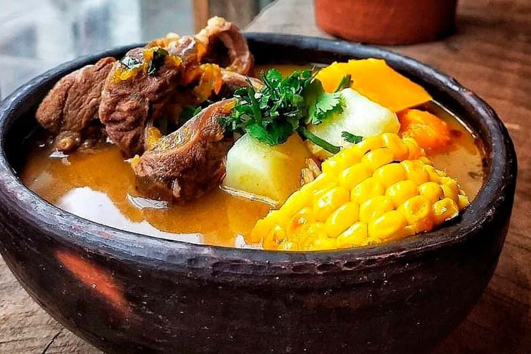

Ingredients
- 1 tablespoon of oil
- 1 kilo of beef short ribs or chuck roast
- 1/2 bell pepper (cut into strips)
- 2 cloves of garlic
- 1 carrot (cut into strips)
- 1 celery stalk
- 6 potatoes
- 1 cup of green beans
- 6 pieces of pumpkin
- 3 tablespoons of rice
- 6 pieces of corn
- 3 tablespoons of rice
- Chopped parsley
- 1 1/2 liters of cold water
- Sea Salt, Garlic, and Gourmet Parsley to taste
- Ground White Pepper Gourmet (in small quantity)
- Complete Gourmet Seasoning
- Gourmet Sea Salt
Preparation
- Cut the meat into 6 pieces.
- In a large pot, heat the oil, add the meat, and season with Sea Salt, Garlic, and Parsley. Sear on both sides.
- Add the cold water, bell pepper, garlic cloves, carrot, and celery stalk, and bring to a boil. If using a pressure cooker, cook for 20-25 minutes, and in a regular pot, cook for 35-40 minutes.
- Meanwhile, peel the potatoes.
- When the meat is tender, add the potatoes, pumpkin, and rice to the pot, keeping it uncovered.
- When the potatoes are almost ready, add the corn and green beans.
- Season with Complete Seasoning, Whole Oregano, Ground White Pepper, and Sea Salt, Garlic, and Parsley.
- Cook over low heat with the pot covered until the corn is cooked.
- Serve and sprinkle with chopped parsley.